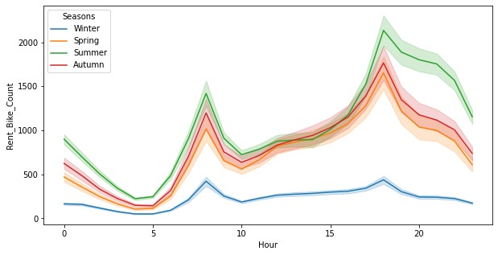
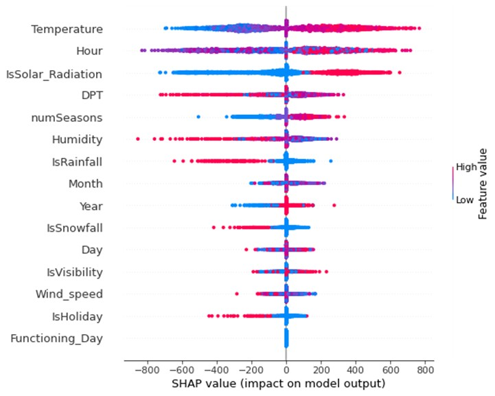

0.96test R² for the tuned neural network
6models compared
8,620hourly observations
Problem
Bike-sharing operators need to know how many bikes will be rented each hour to plan staff and fleet. This project predicted hourly rentals in Seoul from a year of hourly weather, calendar, and operating data (UCI Seoul Bike Sharing Demand dataset).
Approach
- Prepared the data: checked completeness, studied correlations, and converted rainfall, snowfall, visibility, solar radiation, and holidays into binary indicators; split the data 80/20.
- Compared linear regression, Gaussian process regression, an artificial neural network, a PyTorch LSTM, XGBoost, and random forest, scored by R², RMSE, and MAE.
- Tuned the neural network with Ray Tune (128 configurations of layer sizes, dropout, and learning rate), random forest with three-fold GridSearchCV, and XGBoost with sequential grid search and 10-fold cross-validation.
- Trained the LSTM on one-month sliding windows, holding out the last two months for testing, and explained the models with SHAP values and feature importance.
Results
- The tuned neural network performed best (R² 0.96, RMSE 142, MAE 87), followed by the LSTM (R² 0.95); linear regression reached R² 0.72.
- Hour of day, temperature, season, humidity, and solar radiation were the most important features in all three explained models; demand peaks at the morning and evening commutes and is lowest in winter.



Skills
Time-Series ForecastingPyTorchLSTMXGBoostHyperparameter TuningRay TuneSHAP
Tools: Python, PyTorch, Ray Tune, XGBoost, scikit-learn, SHAP